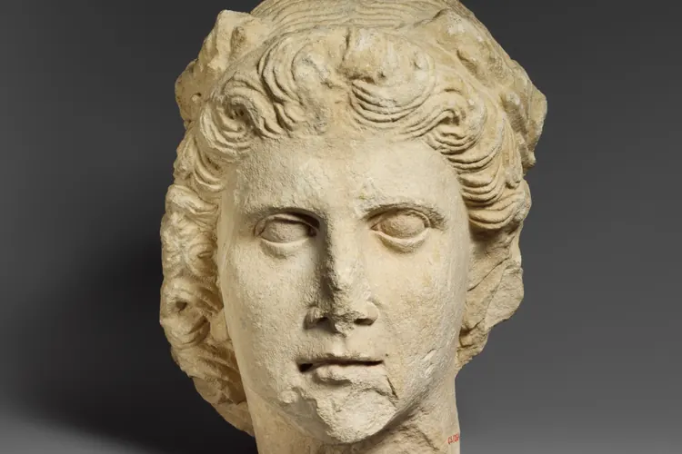

Почему приложения-оценщики ставят одному лицу разные баллы
Расстояние до камеры, свет, наклон головы и скрытые эталоны: объясняем, почему алгоритмы так по-разному оценивают одно и то же лицо.

Пользователь отправляет селфи в три приложения и получает три разных балла. Делает новый снимок, и цифры снова меняются. Кажется, что какое-то из приложений просто сломано. На деле расхождения почти всегда объясняются двумя вещами: условиями съёмки и правилами, по которым каждая программа считает результат.
Камера искажает раньше алгоритма
Главный источник ошибки: расстояние до объектива. Фронтальная камера смартфона широкоугольная, и на коротком расстоянии она увеличивает то, что ближе к ней. Сильнее всего это заметно на носе, а уши и контур челюсти, наоборот, визуально отступают назад.
Этот эффект измерен. В 2018 году в журнале JAMA Facial Plastic Surgery вышло исследование, авторы которого подсчитали: на снимке с расстояния около 30 сантиметров нос выглядит примерно на 30% шире, чем на портрете с полутора метров. Для алгоритма, который считает пропорции, такой разницы достаточно, чтобы заметно сдвинуть итоговый балл.
Следом идут наклон и поворот головы. Опущенный на несколько градусов подбородок укорачивает нижнюю треть лица, а лёгкий поворот в сторону нарушает симметрию, которую многие приложения считают ключевым параметром.
Свет влияет не меньше. Верхний источник, например потолочная лампа, оставляет тени под глазами и скулами, и программа может принять их за рельеф. Улыбка меняет форму глаз и ширину нижней части лица, поэтому даже лёгкая мимика сдвигает расчёт.
Отдельный фактор: фильтры. Во многих смартфонах ретушь в камере включена по умолчанию. Она сглаживает кожу, чуть увеличивает глаза и сужает овал лица. Пользователь может об этом не знать, а приложение оценивает уже обработанный снимок.
У каждого приложения свой эталон
Даже одинаковые фотографии не гарантируют одинаковых баллов. Каждый сервис сравнивает лицо со своей нормой: одни опираются на «золотое сечение», другие на средние пропорции из собственной базы снимков. Шкалы для мужских и женских лиц тоже часто разные.
Эти нормы почти никогда не раскрываются. Поэтому «семь из десяти» в одном приложении и «семь из десяти» в другом могут означать совсем разные вещи.
«Алгоритм не видит человека. Он видит несколько десятков точек на лице, и стоит сдвинуть камеру на ладонь, как для него это уже другое лицо.»
Лукин напоминает и о главном ограничении: приложения измеряют геометрию, а не привлекательность. Живое впечатление от человека складывается из мимики, голоса, манеры держаться и контекста. На статичном снимке ничего из этого нет.
Как снять честную фотографию
Если хочется сравнивать результаты между собой, условия съёмки должны быть одинаковыми. Инженеры советуют придерживаться нескольких простых правил.
- Камера на расстоянии вытянутой руки или дальше, лучше на штативе с таймером.
- Объектив на уровне глаз, голова прямо, без наклона и поворота.
- Ровный мягкий свет спереди, например дневной свет от окна.
- Нейтральное выражение лица, рот закрыт, взгляд прямо в камеру.
- Фильтры и встроенная ретушь отключены.
И последнее. Любой балл описывает конкретную фотографию в конкретных условиях, а не человека. Относиться к нему стоит как к любопытной цифре, а не как к оценке собственной ценности.